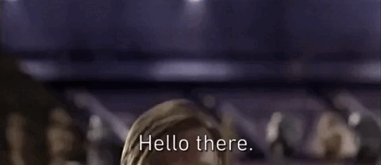

Vítejte na stránkách

Hello World!
Autor:
Jakub Skalka
HOME
SECOND
MATURITNÍ ČETBA
Seznam četby:
Andy Weir
-
Marťan
Zbytek zatím nefunkční:
Moliere
-
Zdravý nemocný
,
Lakomec
Gogol
-
Revizor
Karel Havlíček Borovský
-
Tyrolské Elegie
,
Křest Svatého Vladimíra
Guy de Maupassant
-
Kulička
Edgar Allan Poe
-
Jáma a kyvadlo
George Orwel
-
1984
Farma Zvířat
Antoine de Saint-Exupéry
-
Malý Princ
Ernest Hamingway
-
Stařec a moře
John Steinback
-
O myších a lidech
Oscar Wilde
-
Obraz Duriana Graye
Karel Čapek
-
R.U.R.
,
Válka s Mloky
Divadlo Járy Cimrmana
-
České Nebe
,
Výprava na severní pól
Viktor Dyk
-
Krysař